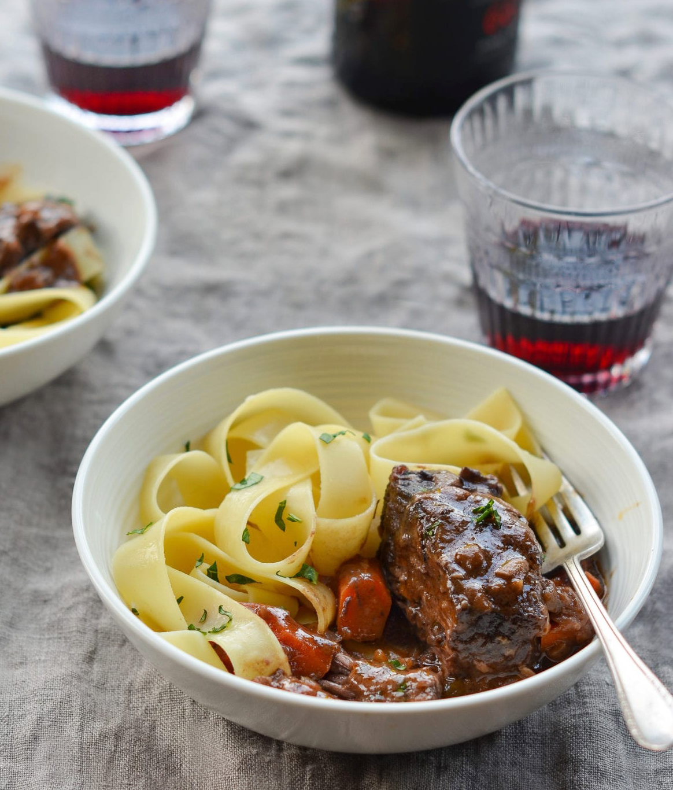

Red Wine Braised Short Ribs

Description
Savor the fork-tender goodness of braised short ribs—the ultimate comfort
food for a chilly evening.
Searching for that perfect comforting dish for chilly winter nights or
festive gatherings? Look no further than these wine-braised short ribs.
Similar in technique and flavor to my ever-popular beef stew, this dish
starts by searing the short ribs before slow-braising them to fork-tender
perfection in a rich, flavorful red wine sauce. Just a little
heads-up—short ribs require a few hours in the oven to reach that
melt-in-your-mouth tenderness, so be sure to plan ahead. Serve them over
egg noodles, mashed potatoes, or creamy polenta for a meal guaranteed to
fill your home with warmth and bring smiles to everyone at your table.
Ingredients
- 4 pounds boneless short ribs
- 2 teaspoons kosher salt
- ½ teaspoon freshly ground black pepper
- 2 tablespoons olive oil
- 2 medium yellow onions, diced
- 6 cloves garlic, roughly chopped
- 1½ tablespoons tomato paste
- ¼ cup all-purpose flour
- 2⅓ cups red wine (see note)
- 1 cup beef broth
- 2 teaspoons sugar
- 1 bay leaf
- 5 sprigs fresh thyme
- 2 large carrots, sliced ½-in-thick diagonally
Steps
-
Adjust an oven rack to the lower-middle position and preheat the oven to
325°F. Season the short ribs all over with salt and pepper. Heat 1
tablespoon of the oil in a large heavy-bottomed Dutch oven or oven-safe
pot over medium-high heat until shimmering. Add half of the short ribs
and cook, without moving, until well browned on one side only, 3 to 5
minutes. Transfer the beef to a large plate. Repeat with the remaining
tablespoon of oil and short ribs. (Note: Browning the beef adds flavor.
It might seem odd to brown on one side only but I find that it saves
time and does the job just as well.)
-
Pour off all but one tablespoon of fat, return the pot to the stove, and
reduce the heat to medium-low. Add the onions and cook, stirring
occasionally, until soft and translucent, about 5 minutes. (If the
onions begin to darken too quickly, add 1 to 2 tablespoons of water to
the pan.) Add the garlic and cook, stirring occasionally, 2 minutes
more. Add the tomato paste and cook, stirring constantly, for 1 minute.
Add the flour and cook, stirring constantly, until fully absorbed by the
onion-tomato mixture, about 1 minute.
-
Add the wine, broth, sugar, bay leaf and thyme sprigs; increase the heat
to high and bring to a boil, scraping the bottom of the pan to loosen
browned bits. Add the short ribs and any accumulated juices to the pot
and return to a boil. Cover the pot with a lid, transfer to the oven,
and cook for 2 hours.
-
Carefully remove the pot from the oven. Stir in the carrots. Cover and
return the pot to the oven and cook 45 to 60 minutes more, or until the
carrots and meat are tender. Remove the bay leaf and thyme sprigs. Skim
any grease off the surface of the sauce, if necessary. Taste the sauce
and adjust seasoning, if necessary. Spoon the short ribs and sauce into
bowls over egg noodles, mashed potatoes, or creamy polenta.
Back to home